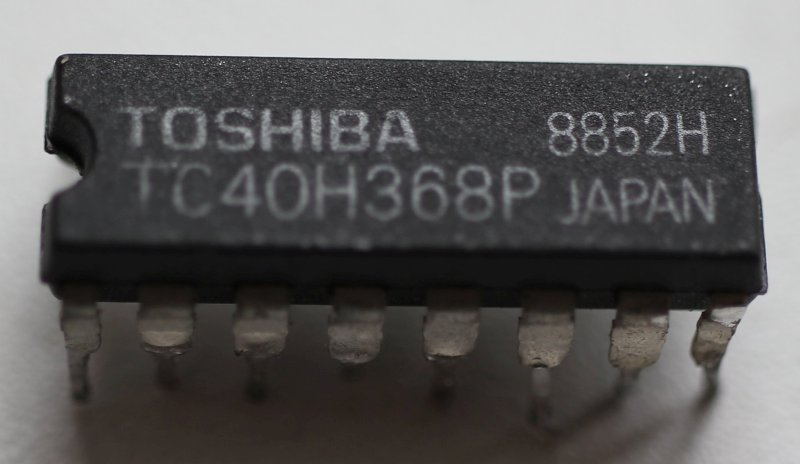
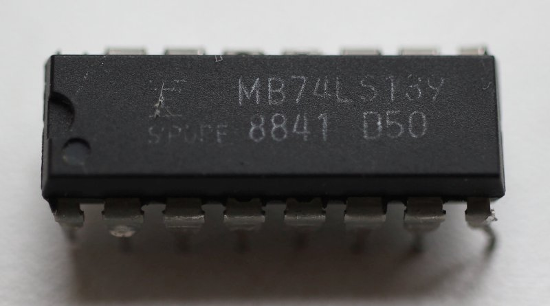
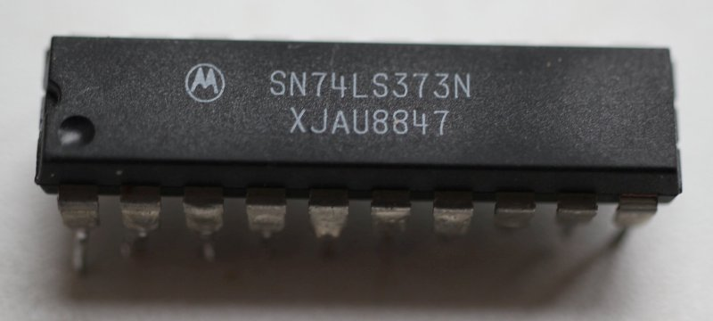
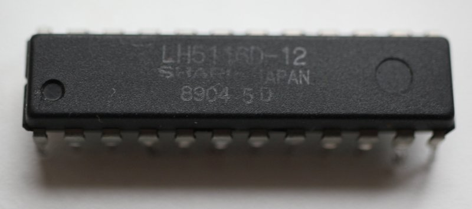

The four libraries below — BaseLogicLib, BaseBoardLib, JsonLib and
SharpTools — live in the Common/ folder of the repository and contain the code shared
across the project: BaseLogicLib provides the basic logic primitives used in N-MOS chips,
BaseBoardLib contains the components that are found on the simulated motherboards,
JsonLib is a general-purpose library for working with JSON, and SharpTools collects
the remaining shared tools of the project.
Base Logic
Basic logic primitives used in N-MOS chips.
The implementation principles are similar to SystemC, but without using SystemC :)
Edge Simulation
In the literal sense, the edge is not simulated (in the sense of the time interval).
Instead an approach with comparison of the previous CLK value and the current one is used.
Specifically for emulation purposes (M6502Core, APUSim, PPUSim) this
technique is not applied, because most of the circuits of these chips are made using NMOS technology with
dynamic logic on latches (DLatch).
If you suddenly need to simulate an edge, the library has two calls (IsPosedge and
IsNegedge).
BaseBoardLib
This library contains components that are found on the simulated motherboards.
These are not necessarily actual chips, they can be some special debugging components, e.g.
Fake6502.
40H368 - IO Binding

An array of notif0 elements (in Verilog terms) used to bind IO ports. The connection of external
ports and CPU differs between Famicom/NES.
LS139 - Famicom/NES "North Bridge"

This paired decoder is used to select the address space of the PPU register interface, internal S-RAM ("Work RAM"), or external ROM.
The distinguishing feature is that the output from one half is fed to the same chip :-)
LS373 - PPU VRAM Address Latch

Used for PPU Address/Data bus multiplexing. "Memorizes" the lower 8 bits of the PPU address bus when PPU ALE=1.
SRAM - Typical S-RAM from 90's

Well, that's easy.
JsonLib
A general-purpose library for working with JSON.
SharpTools
The Readme.md of this library is only a stub — it has no content beyond the title.